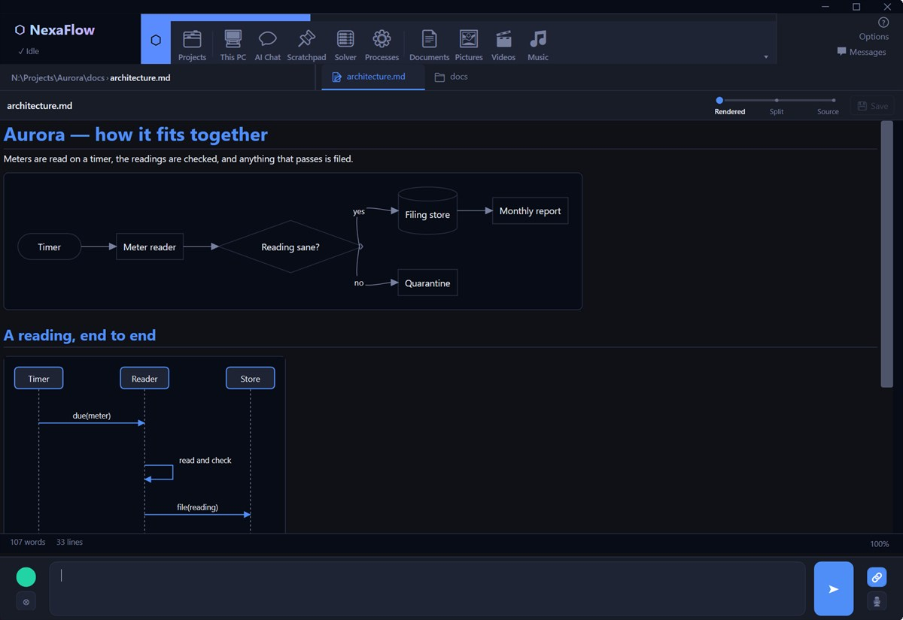
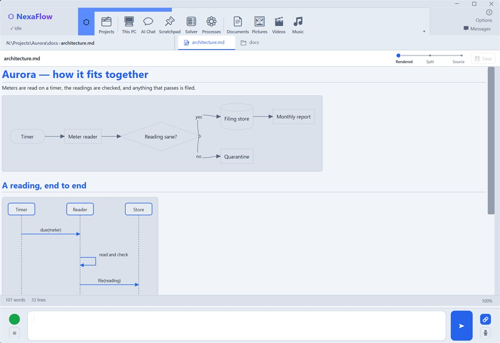
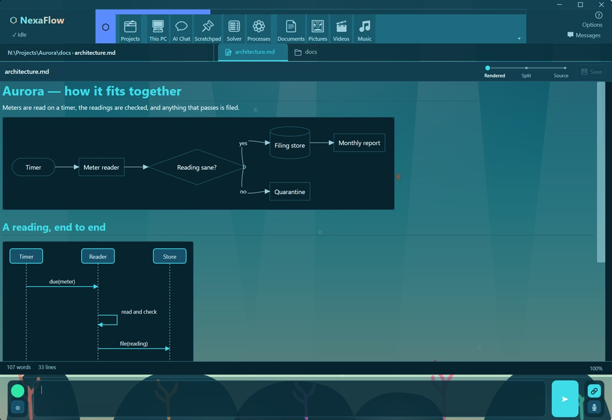
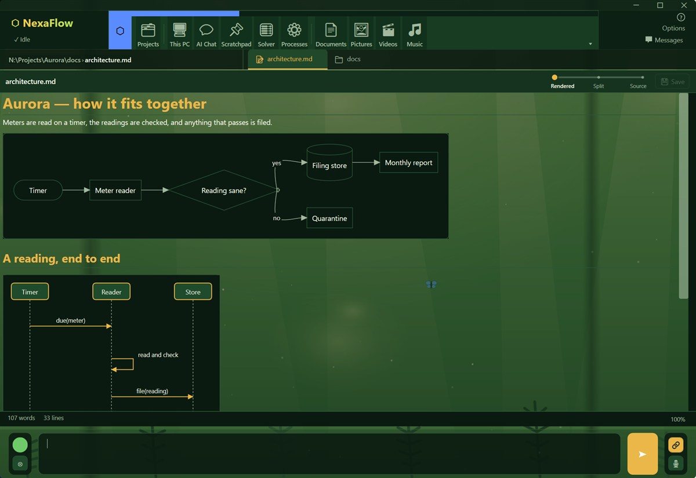
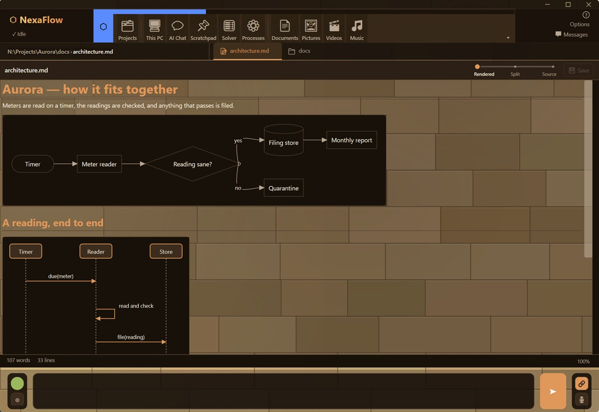
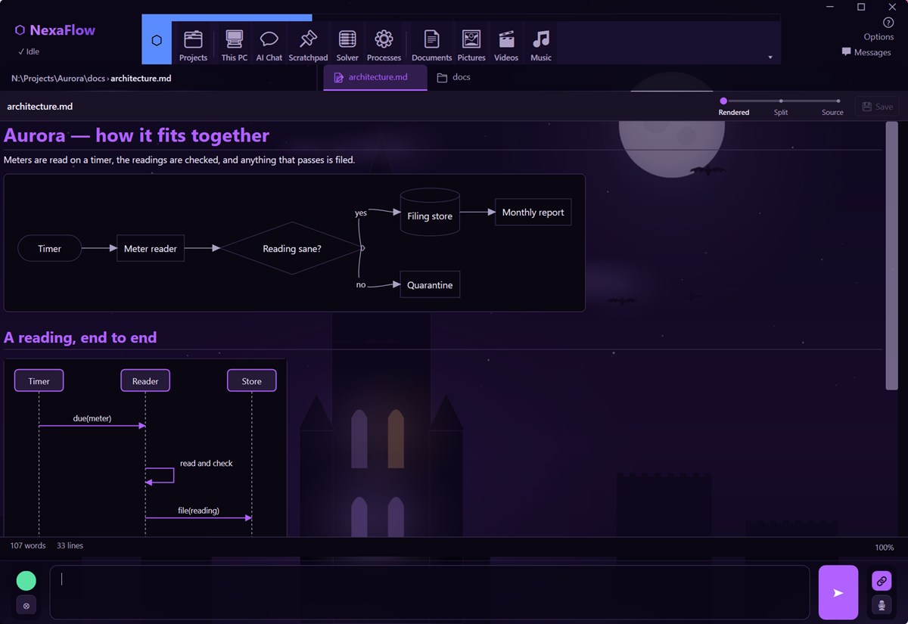
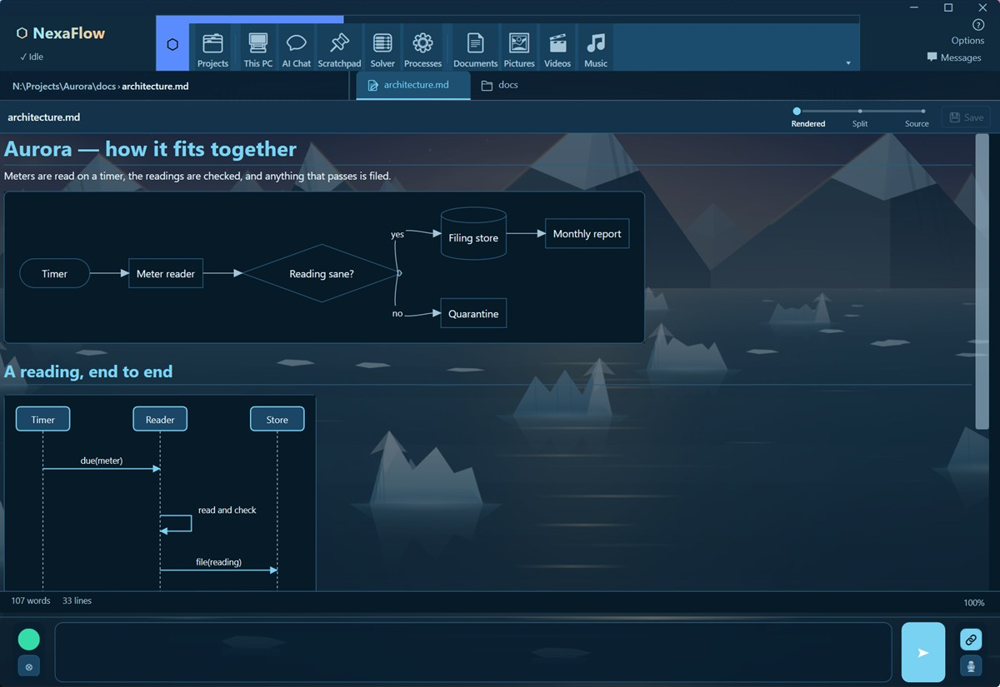
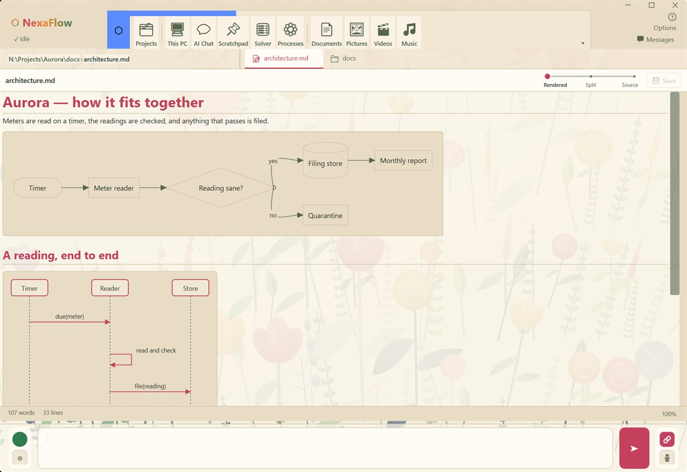
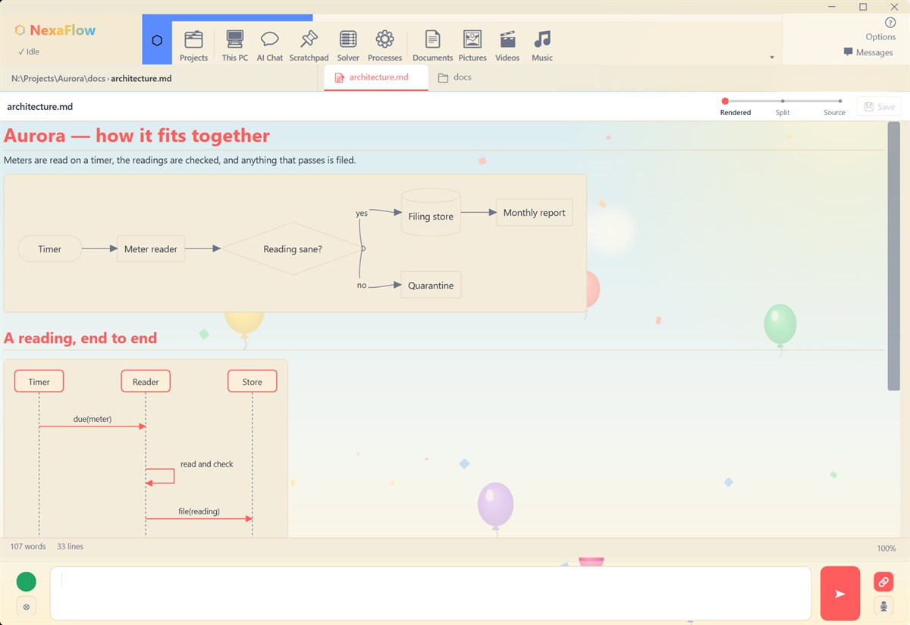

Every picture below is the same document in the same window. Pick a theme in Options; a backdrop that moves can stop itself while you are on battery, and text size and per-tab zoom are yours to set on top of whichever you choose.
These pages describe Nexaflow as it stands after v1.6.0, so some of what they cover is not in the current download yet. The latest release is v1.6.0.
Themes
Nine of them, and they go further than a colour swap: several paint an illustrated backdrop behind your work, and the diagrams in your document take the theme's colours too.








